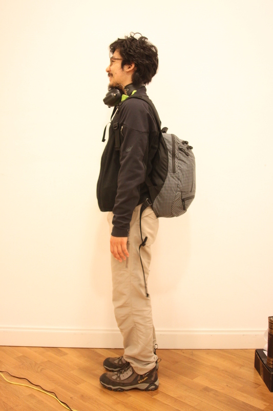
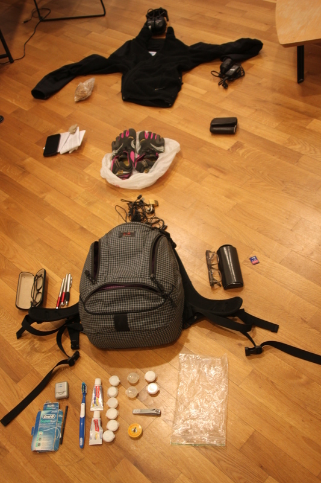
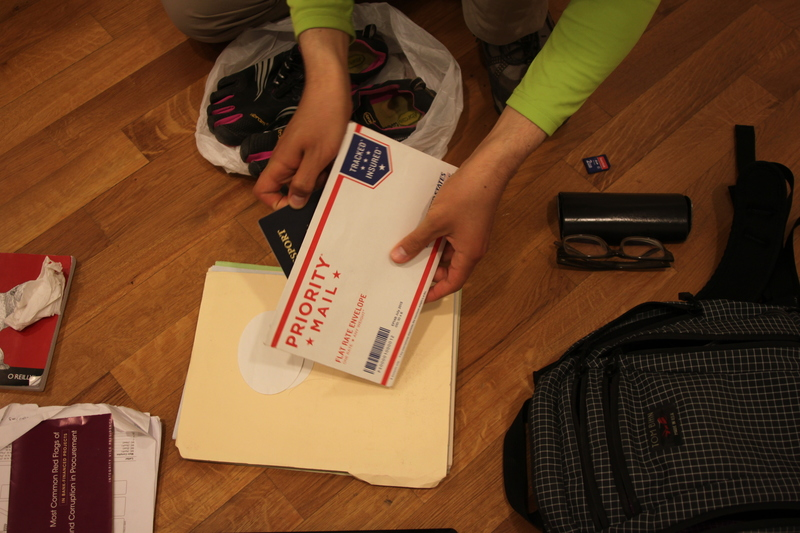
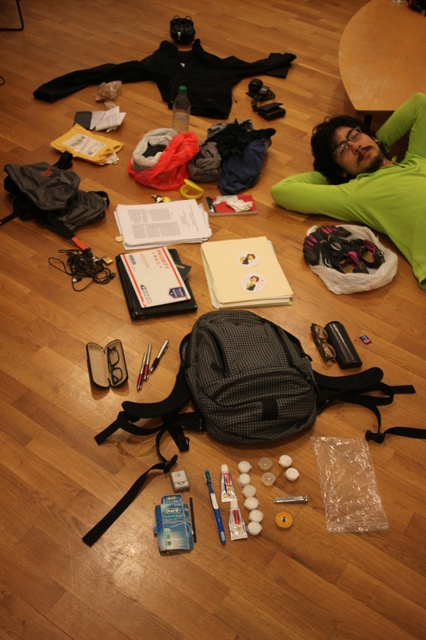

Here's the stuff that I had with me when I arrived at Rob's place on June 19, 2014.
Most of the stuff is in the backpack.

Here it is on the floor.
But before I show you what's in there, let's see what else I have.
One jacket pocket contains some cashews. The other contains a power cable for my laptop computer.
I'm wearing an EMS Techwick shirt underneath.
I have a wallet, a phone, and some papers in my pants.
You've seen everything that isn't in the backpack, so now let's open the backpack.
I keep floss, toothpaste, laundry detergent, sunscreen, shampoo, lip balm, and maybe some other things in this bottom pocket.
Now let's open the side pocket.
There are some pens and a pair of glasses.
On to the other side pocket
Another pair of glasses!
This outer pocket is where I keep micro-USB cables.
I'm taking my shoes out of the long pocket that is intended for a water bottle.
Here's everything I've removed so far.
I'll neaten up the bottom pocket so you can see what's in it.
Here's everything again.

And here's just the stuff from the backpack's outer pockets.
The last pocket is the main pocket in the backpack.
Among is contents is another bag, a Ribz Front Pack. It's empty; I just have it in case I ever acquire more things.
These bags contain dirty clothes.
There's also an envelope with money of other currencies.
Here I'm taking some underwear out of my bag.
What else do I have in here?
Papers!
And a laptop
And a passport

And some CSV files!
I have some other papers too.
And that's it!
